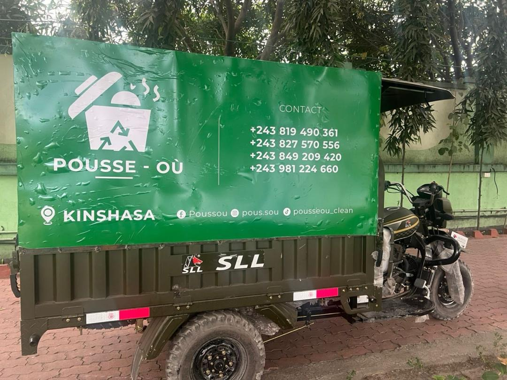
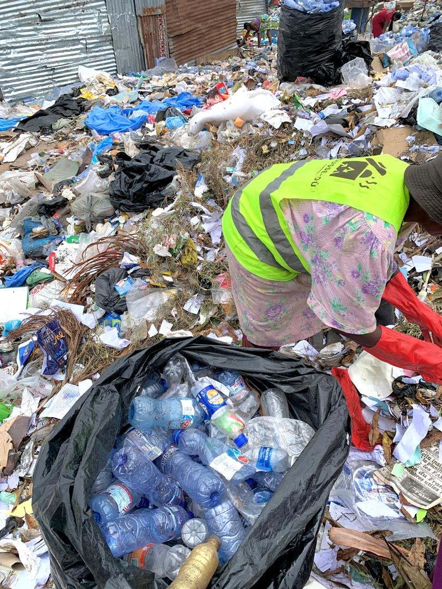
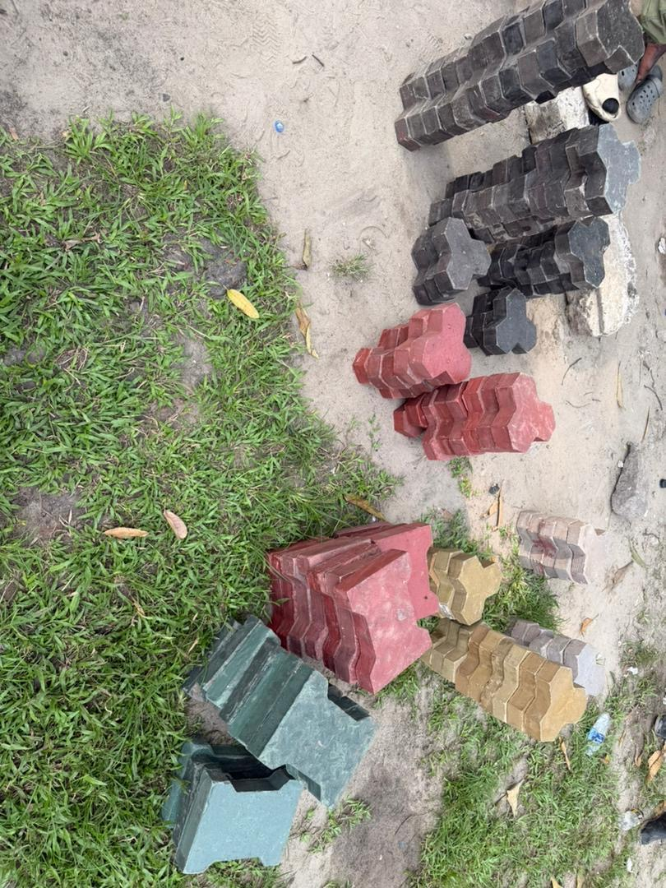

Pousse-Où : de Vrais Déchets, Transformés en Vrais Produits
Pousse-Où collecte, trie et transforme les déchets de Kinshasa en pavés et dallettes réellement utilisés sur de vrais chantiers. Pas de projet pilote, pas de promesses en diaporama — un travail concret et commercialisable.
Aaron Nzangi
Aaron Nzangi est Responsable des Achats chez SUJO et dirige Pousse-Où avec une compréhension pratique de l’approvisionnement, de la coordination des fournisseurs, des besoins de chantier et des opérations locales. Il a fondé Pousse-Où pour prouver que la gestion des déchets à Kinshasa n'a pas à rester informelle. Chaque chargement collecté par ses équipes est trié à la main et transformé pour une seconde vie comme matériau de construction.
« Nous sommes fiers de ce travail parce qu'il est réel — de vrais camions dans de vraies rues, de vraies mains qui trient de vrais déchets, et un vrai produit que l'on peut tenir à la fin. »
De la Rue à la Ligne de Tri, Jusqu'au Pavé Fini



Un Travail que l'on Peut Voir, Toucher et Utiliser
Il est facile de parler d'économie circulaire. Pousse-Où fait ce qu'il y a de plus difficile : des camions qui roulent réellement, des équipes qui trient réellement les déchets à la main chaque jour, et un produit fini — pavés et dallettes — réellement utilisé sur de vrais chantiers.
C'est le genre de partenaire que SUJO est fier de soutenir : pas un concept, mais une opération concrète avec des résultats visibles dans les rues de Kinshasa.
Vous Souhaitez Collaborer avec Pousse-Où ou SUJO ?
Que vous ayez besoin de services de collecte, de pavés de construction, ou que vous souhaitiez explorer un partenariat similaire avec SUJO, contactez-nous et nous vous mettrons en relation avec la bonne équipe.
Contactez-nous : contact@sujo-engineering.com